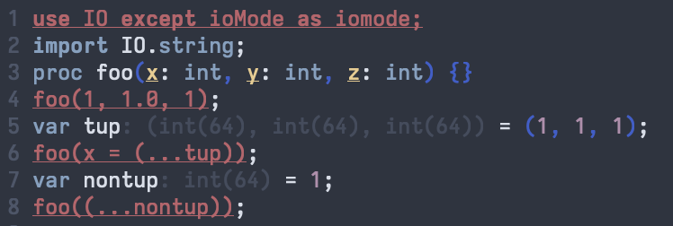
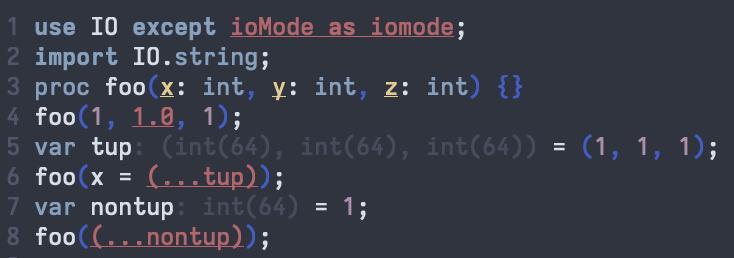
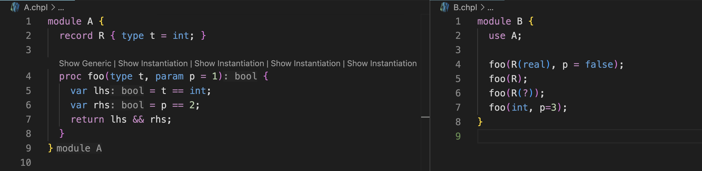
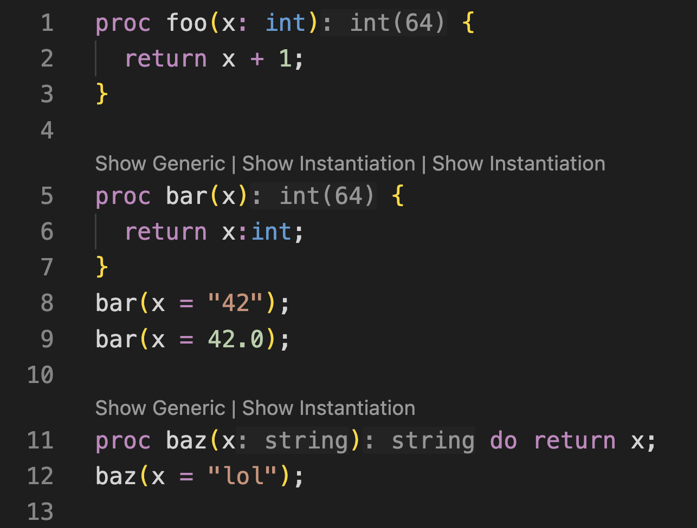

The Chapel developer community is happy to announce the release of Chapel 2.9! This summer release has a particular focus on addressing user-requested features and bugs, as well as continuing our recent focus on improving Chapel tools. As always, you can download and install the new release in a [note:Please note that some formats may not yet be available at time of publication.], including Spack, Homebrew, various Linux package managers, Docker, and source tarballs.
This article summarizes some of Chapel 2.9’s highlights, including:
-
Initial support for dynamically loading Chapel libraries that make use of parallelism and distributed-memory features
-
Further improvements to editing Chapel code through enhancements to the Chapel Language Server (CLS)
-
Significant improvements to Chapel’s union types, in terms of capabilities and ease-of-use
Other notable highlights of Chapel 2.9 that aren’t covered in this article include:
-
Significant ergonomic improvements to Mason, Chapel’s package manager, as well as a new web-based package browser—use it to find newly released packages since Chapel 2.8:
Base64,Crypto,CVL(Chpl Vector Library),Dyno,Log,Parquet,Pathlib,SciChap,TemplateStrings, andTerminalColors -
Additional enhancements to other tools, such as the
chplchecklinter,chpldocdocumentation generator,chapel-pycompiler library, andc2chapeltool for interoperating with C -
A parallel implementation of
scanexpressions for array-like expressions such as
myArray: int,sin(myArray), or[i in 1..n] i -
Support for LLVM 22 as the default compiler back-end, LLDB 22 for debugging, and CUDA 13 for NVIDIA GPUs
-
Newly released Red Hat Enterprise Linux (RHEL) RPMs on HPE Cray EX systems
-
The resolution of 26 user issues, including all 11 that were opened since Chapel 2.8
For a far more complete list of improvements in Chapel 2.9, see the CHANGES.md file. And a big thanks to everyone who contributed to Chapel 2.9!
Dynamically Loaded Parallel Libraries
Chapel 2.5 and 2.6 introduced a new DynamicLoading
module
that supports loading and calling into dynamic libraries from
Chapel. Up until now, this feature could only handle libraries that
were written in C or that were sufficiently C-like. Notably,
dynamically loaded Chapel libraries were not able to use the
language’s features for parallelism or distributed memory
programming.
Chapel 2.9 removes this limitation by adding prototypical support
for dynamically loading Chapel libraries that use parallelism and/or
multiple locales. This capability is enabled in part by a new
compiler flag, --no-builtin-runtime. It permits distinct binaries
to share a single, dynamically loaded copy of the Chapel runtime,
which implements communication, parallelism, and memory management
for Chapel programs. Previously, each Chapel binary would bundle
its own copy of the runtime, which led to resource contention and a
lack of coordination between programs.
As a simple example, the following Chapel program exports a
procedure named test1 that uses a task-parallel coforall loop
with an on-clause to spin up a task per locale:
|
|
By compiling the program with the following command-line, we
instruct the chpl compiler to create a dynamic library from it:
$ chpl Library.chpl --library --dynamic --no-builtin-runtime
(Trying this at home? Be sure to read this first.)
CHPL_COMM=ofi, only gasnet and
none. This feature also requires the runtime to be built using
position-independent code (PIC), so be sure you’ve built your
runtime with CHPL_LIB_PIC=pic set, and to also use it when
compiling your programs (or, equivalently, use --lib-pic=pic).
Examples like the one shown here won’t work correctly otherwise.
Having created the library, we can then write a separate program
that loads it and calls test1:
|
|
We then compile the program, once again saying not to bundle the runtime:
$ chpl Executable.chpl --no-builtin-runtime
When executed on multiple locales (e.g., -nl 4), the main
program starts by loading a shared copy of the runtime when
execution begins. Next, it loads the user’s dynamic library, which
will share the same copy of the runtime. It then retrieves the
test1 procedure from the library and calls into it, causing our
greeting message to be printed once per locale, in an arbitrary
order due to the parallelism:
Hello from locale 1
Hello from locale 0
Hello from locale 3
Hello from locale 2
This feature is still in its early days, so you may encounter bugs that break the loaded program or prevent you from running it. If you do, please file any bugs you encounter as issues on the Chapel GitHub repo. In the meantime, we will be working to address known limitations, harden the implementation, and eventually port it to support OFI communication.
Editor Improvements due to CLS
Since our 2.0 release, Chapel has
provided two key tools that enable users to write code more
productively: the Chapel Language Server
(CLS)
and the chplcheck linter.
This 2.9 release includes several improvements to both these
tools, where we’ll focus on CLS here.
As in Chapel 2.8, the biggest improvements to the language server
have been made in the experimental resolution-based
features.
Error Improvements
The first case we’ll cover improves the quality of compiler errors within the editor. This is the result of exposing more information about errors to the language server, permitting it to better interpret several common error messages and display them to the user in a more helpful way. For example, consider the following file, in which the user has made several mistakes, as noted in the comments:
bad-calls.chpl
|
|
Prior to Chapel 2.9, the editor would highlight the entire problematic context for such errors, often spanning the complete line:

Now, the error is highlighted much more precisely. In the use
statement, the problematic fragment that attempted to rename an
identifier in an except clause is specifically highlighted.
Similarly, the editor highlights the specific arguments that caused
the resolution failures for the calls to foo().

Having pinpointed the source of the error, users can then use their editors’ standard features for viewing the error messages (e.g., hovering over the error) to see additional information about the cause of the errors. In addition to the highlighting improvements described here, many error messages have also improved in clarity and detail since Chapel 2.8.
Generic Instantiation Inlays
In Chapel 2.9, the rendering of generic procedures has also been
improved in CLS. For example, it can now display generic
instantiations collected across the multiple files that make up a
project. In the following program, the generic procedure foo()
defined in module A displays instantiations stemming from calls
made in a separate file and module, B:
A.chpl
|
|
B.chpl
|
|

In addition, CLS now displays inlays for declarations within generic
procedures whose types are independent of the instantiating context.
For example, in foo() above, note that even in this generic view,
lhs and rhs are annotated as having type bool since they will
have those types regardless of the type t and value p that the
procedure is instantiated with. Note that the return type is
similarly inferred, which leads to our final CLS highlight:
Inferred Return/Yield Types
Another long-awaited editor improvement is the ability to infer and
display return types for procedures (as well as yield types for
iterators). In the following program, CLS is shown inferring the
return type of a concrete procedure (foo), the [note:The previous section’s
example demonstrated this as well, by inferring that foo() returns
a bool regardless of arguments t and p).] of a
generic procedure (bar), and an instantiation-specific return type
for a second generic procedure (baz):
return.chpl
|
|

That wraps up some highlights for CLS in Chapel 2.9, but see the CHANGES.md file for additional improvements.
Union Type Improvements
Though Chapel has long supported union types, they have unfortunately been stuck in a half-baked state for years. Motivated by a recent user request, they took a big leap forward in Chapel 2.9.
Union Basics
To introduce some of the new features added in this release, let’s
start with a review of the basics. The following union declaration
in Chapel declares a type with three fields, x, y, and z,
where the former two are integers and the third is a real floating
point value.
|
|
At any given time, only one of these fields can be actively storing
a value. This is known as the union’s active field, and Chapel
ensures that when a value is stored in a given field, only that
field may be read until some other field is written and becomes the
new active field. For example, if we store into y, we can read
from y, but not from x or z:
|
|
Similarly, if the union is written out, the active field is displayed. For example,
|
|
produces:
myU is: (y = 45)
And that’s about where Chapel’s support for unions has stood for many years. It was a classic chicken-and-egg problem in which Chapel users weren’t using unions because they weren’t very capable, and we had trouble prioritizing them because nobody [note:In addition, we were probably letting the quest for the perfect design be the enemy of one that might have been good enough.]
Active Field Queries
In Chapel 2.9, we broke this vicious cycle, where a key element was introducing the ability to query which field is active in a given union, using 0-based numbering of its fields. For example, if we were to write:
|
|
we’d see:
The active field is #1
From there, safe code can be written to choose between the active fields. For example, consider the following conditional:
|
|
Chapel 2.9 also introduces a stylized way of performing a select
directly on a union expression to determine its active field. You
can read about this feature in the language
specification,
but please note that the current syntax is subject to change and an
active area of discussion at the time of this release.
Active Field Visitors
Another way of identifying active fields is to use a visitor pattern in which a procedure is supplied for each field, taking that field’s name and type as its argument, For example, the following call:
|
|
results in:
y is 45
Note that while anonymous procedures are used above, traditional declared procedures can be used as well. For example:
|
|
would generate:
In bar, y is: 45
Comparison Operators
Chapel also now provides default comparison operators between unions of the same type. Two unions are considered to be equal if they both have the same active field and the values stored in those fields are equal. As an example:
|
|
As with default comparison operators on records, these defaults can
be overridden by a user. For example, the following overloads
consider two of our union values to be equal if x is active in
one, y is active in the other, and their values match:
|
|
Since our records meet the custom definition of equality, running this example generates:
Using my overload, (y = 45) == (x = 45) => true
Using my overload, (y = 45) != (x = 45) => false
To read more about unions in Chapel, please see their chapter in the language specification, and be sure to share your feedback with us!
For More Information
If you have questions about Chapel 2.9 or any of its new features, please reach out on Chapel’s Slack workspace, Discord channel, Discourse group, or one of our other community forums. We’re always interested in hearing more about how we can make the Chapel language, libraries, implementation, and tools more useful to you.